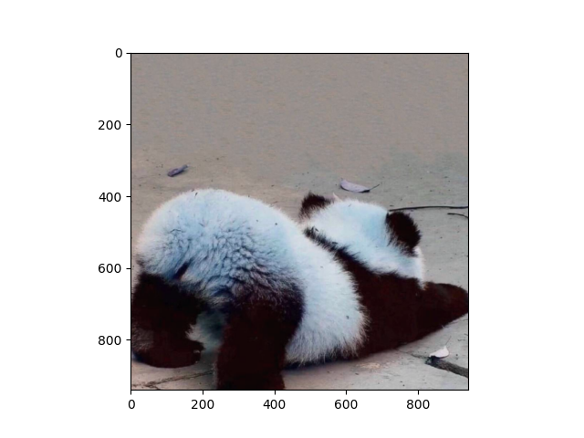
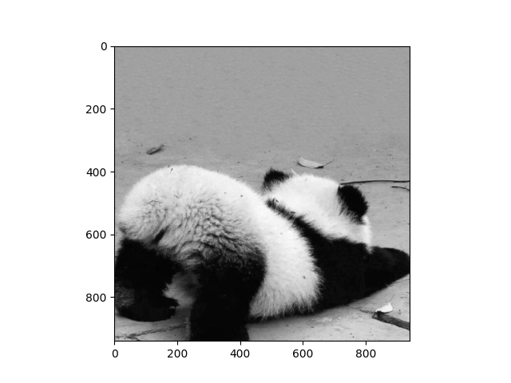
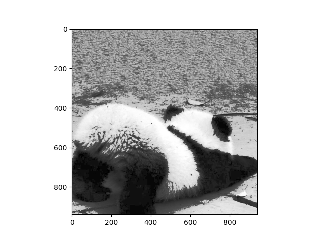

图像表示和图像增强（一）
图像表示
图像表示与获取主要包括:
- 图像的数字化表示
- 图像是连续的信号,需要通过采样和量化过程变为数字化的离散信号。
- 采样间隔(Sample spacing)决定了图像的分辨率和包含的信息量。
- 量化表决定了图像的灰度级数(比特数)。
- 颜色模式
- RGB色彩模式:颜色通过红绿蓝三个颜色通道的组合表示。
- 灰度图像:只有灰度一个通道,表示图像的亮度信息。
- 图像获取
- 摄像机、图像传感器采集光线信息,转换为图像信号。
- 医学成像(CT、MRI等)通过非光学方法获取图像。
- 图像文件格式
- JPEG:有损压缩格式,文件大小较小。
- PNG:无损压缩格式,保留更多细节质量。
- TIFF:灵活的位图图像格式。
- 图像存储
- 像素网格存储:行序和列序存储。
- 数据压缩:提高存储效率。
图像从连续信号到数字化表示的过程,不同的颜色模式、文件格式,以及如何有效存储图像数据。这些构成了数字图像处理的基础。
图像增强
图像增强主要包括以下几种方法:
1. 直方图均衡化
改善图像的对比度,使得整个灰度范围都得到充分利用。
直方图均衡化后,容易区分不同部分的灰度差异。
直方图均衡化(Histogram Equalization)是图像处理中常用的对比度增强技术,其目的是扩展图像的灰度范围,使图像灰度直方图尽可能均匀,从而增强图像的对比度。
具体做法是:
1. 计算图像的灰度直方图,即**统计每个灰度级个数**。
2. 计算每个灰度级的累积分布函数(CDF)。
3. 根据CDF,通过映射函数**将原始灰度级映射到新的灰度级**。这个映射函数使得新的灰度级数量在**0~255范围尽可能均匀**。
4. 根据映射函数转换每个像素的灰度值,生成直方图均衡化后的图像。直方图均衡化后,原来灰度分布范围小的区域会被拉伸到0~255全部范围,从而增强对比度。这对于亮度分布很局限的图像来说可以有效提高清晰度和可识别性。但它也可能导致图像增益过大出现反转。所以需针对不同图像谨慎使用。
import cv2
import numpy as np
from matplotlib import pyplot as plt
img = cv2.imread('image.jpg') # 读取彩色图像
# 将彩色图像转换为灰度图像
img_gray = cv2.cvtColor(img, cv2.COLOR_BGR2GRAY)
# 灰度图像进行直方图均衡化
hist, bins = np.histogram(img_gray.flatten(), 256, [0, 256])
cdf = hist.cumsum()
cdf_m = cdf * hist.max() / cdf.max()
img_eq = np.interp(img_gray.flatten(), bins[:-1], cdf_m)
img_eq = img_eq.reshape(img_gray.shape)
plt.imshow(img, cmap='gray') # 原图彩色
plt.show()
plt.imshow(img_gray, cmap='gray') # 原图->灰色图片
plt.show()
plt.imshow(img_eq, cmap='gray') # 灰色图片->直方图均衡化
plt.show()| 原图 | 灰度图 | 直方图均衡化后的灰度图 |
|---|---|---|
|  |  |  |
直方图均衡化在图像处理中的典型应用包括:
对比度增强：直方图均衡化可以有效拉伸图像的动态范围,增加图像对比度,使得图像细节更加明显。这对于低对比度的图像来说尤为重要。
医学成像：在X射线、CT等医学图像分析中,使用直方图均衡化可以增加图像不同组织之间的对比度,更容易识别和诊断。
夜视及卫星图像处理：由于拍摄条件受限,这些图像常常整体对比度很弱。使用均衡化可以增强显示效果。
影像监控：在监控摄像中均衡化可以提高视频质量,更准确识别人或物体。
人脸识别：直方图均衡化可以减少照明变化对人脸识别的影响,提高识别准确率。
总之,直方图均衡化在需要提高图像对比度和细节的场合有着广泛的应用。但也需要注意它可能带来图像增益过高的问题。
2. 灰度变换
灰度变换是通过对图像像素点的灰度值进行映射来调整图像的对比度和亮度。
import numpy as np
import cv2
import matplotlib.pyplot as plt
# 读取图像
image = cv2.imread('input_image.jpg', cv2.IMREAD_GRAYSCALE)
# 线性灰度变换
def linear_grayscale_transform(image, alpha, beta):
# 对每个像素应用线性变换
result = alpha * image + beta
# 将灰度值限制在[0, 255]范围内
result = np.clip(result, 0, 255)
return result.astype(np.uint8)
# 非线性灰度变换（伽马变换）
def gamma_transform(image, gamma):
# 对每个像素应用伽马变换
result = np.power(image / 255.0, gamma) * 255.0
return result.astype(np.uint8)
# 设置线性变换的参数
alpha = 1.5
beta = 30
# 设置伽马变换的参数
gamma_value = 1.8
# 应用线性灰度变换
linear_transformed_image = linear_grayscale_transform(image, alpha, beta)
# 应用伽马变换
gamma_transformed_image = gamma_transform(image, gamma_value)
# 显示原始图像和变换后的图像
plt.figure(figsize=(10, 5))
plt.subplot(1, 3, 1)
plt.imshow(image, cmap='gray')
plt.title('Original Image')
plt.subplot(1, 3, 2)
plt.imshow(linear_transformed_image, cmap='gray')
plt.title('Linear Grayscale Transform')
plt.subplot(1, 3, 3)
plt.imshow(gamma_transformed_image, cmap='gray')
plt.title('Gamma Transform')
plt.show()
本博客所有文章除特别声明外，均采用 CC BY-NC-SA 4.0 许可协议。转载请注明来自 YYHY's Blog！